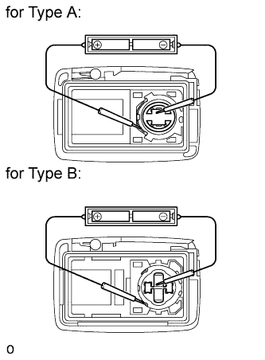

DOOR CONTROL TRANSMITTER > INSPECTION |
| 1. INSPECT TRANSMITTER BATTERY |
Inspect the operation of the transmitter.
Remove the battery (lithium battery) from the transmitter (Click here).
 |
Install a new or normal battery (lithium battery).
From outside the vehicle, approximately 1 m (3.28 ft) away from the driver side outside door handle, test the transmitter by pointing its key plate at the vehicle and pressing a transmitter switch, or while carrying the transmitter touch the inside of the handle and pull it.
 |
Inspect the battery capacity.
Remove the battery from the electrical key transmitter that does not operate. Attach a lead wire (0.6 mm (0.0236 in.) in diameter or less including wire sheath) with tape or equivalent to the negative terminal (Click here).
Carefully extend the lead wire from the position shown in the illustration and install the previously removed transmitter battery.
Using an oscilloscope, check the transmitter battery voltage waveform.

| Tester Condition | Tool Setting | Condition | Specified Condition |
| Battery positive (+) - Battery negative (-) | 0.5 V/DIV, 100 ms/DIV. | Engine switch off, all doors closed and lock switch pushed | 2.2 to 3.2 V (Refer to waveform) |